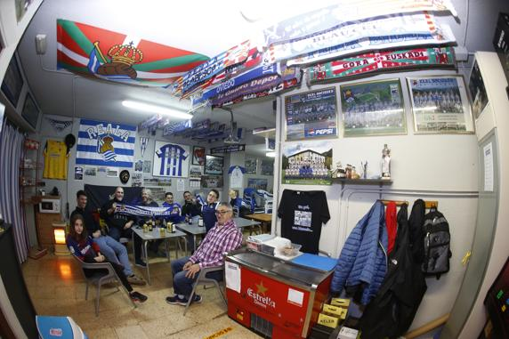
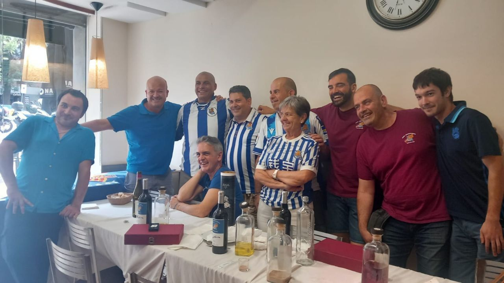
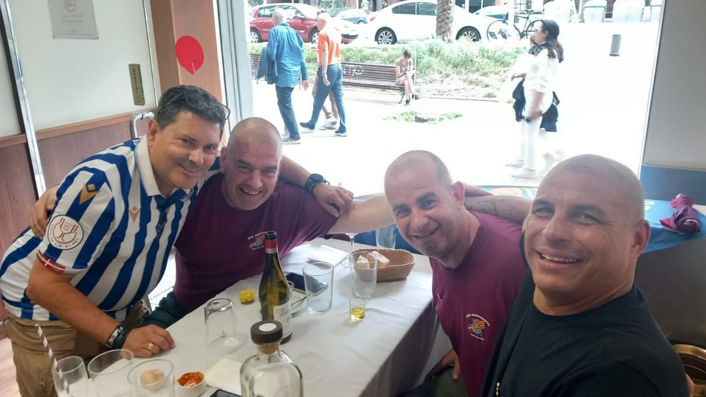

Galería

Momentos txuri-urdin
Diez años de partidos, viajes, cenas y celebraciones. Estos son algunos de nuestros momentos.
Final de Copa · Atlético Madrid vs Real Sociedad · 19 abril 2026

Día de partido en el local

10º aniversario · Junio 2024
El local txuri-urdin — C/ Cantabria 79
En el local con los colores txuri-urdin

Siempre txuri-urdin